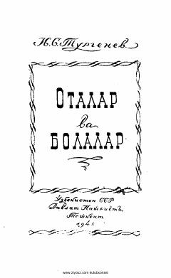

OVTurgenevning avlodlar ziddiyati haqidagi o'lmas romanining o'zbekcha tarjimasi.
Bu asar Ivan Turgenevning mashhur 'Otalar va bolalar' romanining M. Rahmon va I. Shyosov tomonidan o'zbek tiliga qilingan tarjimasidir. Roman 1859 yilgi Rossiya hayotini, Nikolay Petrovitch Kirsanov va uning o'g'li Arkadiy o'rtasidagi avlodlar ziddiyatini tasvirlaydi. Asar ikki avlod — konservativ otalar va yangilikka intiluvchi bolalar o'rtasidagi qarama-qarshilikni chuqur ochib beradi.